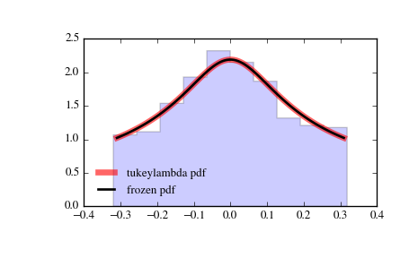

scipy.stats.tukeylambda¶
- scipy.stats.tukeylambda = <scipy.stats._continuous_distns.tukeylambda_gen object at 0x7fa40e8fd110>[source]¶
A Tukey-Lamdba continuous random variable.
As an instance of the rv_continuous class, tukeylambda object inherits from it a collection of generic methods (see below for the full list), and completes them with details specific for this particular distribution.
Notes
A flexible distribution, able to represent and interpolate between the following distributions:
- Cauchy (lam=-1)
- logistic (lam=0.0)
- approx Normal (lam=0.14)
- u-shape (lam = 0.5)
- uniform from -1 to 1 (lam = 1)
tukeylambda takes lam as a shape parameter.
The probability density above is defined in the “standardized” form. To shift and/or scale the distribution use the loc and scale parameters. Specifically, tukeylambda.pdf(x, lam, loc, scale) is identically equivalent to tukeylambda.pdf(y, lam) / scale with y = (x - loc) / scale.
Examples
>>> from scipy.stats import tukeylambda >>> import matplotlib.pyplot as plt >>> fig, ax = plt.subplots(1, 1)
Calculate a few first moments:
>>> lam = 3.13 >>> mean, var, skew, kurt = tukeylambda.stats(lam, moments='mvsk')
Display the probability density function (pdf):
>>> x = np.linspace(tukeylambda.ppf(0.01, lam), ... tukeylambda.ppf(0.99, lam), 100) >>> ax.plot(x, tukeylambda.pdf(x, lam), ... 'r-', lw=5, alpha=0.6, label='tukeylambda pdf')
Alternatively, the distribution object can be called (as a function) to fix the shape, location and scale parameters. This returns a “frozen” RV object holding the given parameters fixed.
Freeze the distribution and display the frozen pdf:
>>> rv = tukeylambda(lam) >>> ax.plot(x, rv.pdf(x), 'k-', lw=2, label='frozen pdf')
Check accuracy of cdf and ppf:
>>> vals = tukeylambda.ppf([0.001, 0.5, 0.999], lam) >>> np.allclose([0.001, 0.5, 0.999], tukeylambda.cdf(vals, lam)) True
Generate random numbers:
>>> r = tukeylambda.rvs(lam, size=1000)
And compare the histogram:
>>> ax.hist(r, normed=True, histtype='stepfilled', alpha=0.2) >>> ax.legend(loc='best', frameon=False) >>> plt.show()
Methods
rvs(lam, loc=0, scale=1, size=1, random_state=None) Random variates. pdf(x, lam, loc=0, scale=1) Probability density function. logpdf(x, lam, loc=0, scale=1) Log of the probability density function. cdf(x, lam, loc=0, scale=1) Cumulative density function. logcdf(x, lam, loc=0, scale=1) Log of the cumulative density function. sf(x, lam, loc=0, scale=1) Survival function (1 - cdf — sometimes more accurate). logsf(x, lam, loc=0, scale=1) Log of the survival function. ppf(q, lam, loc=0, scale=1) Percent point function (inverse of cdf — percentiles). isf(q, lam, loc=0, scale=1) Inverse survival function (inverse of sf). moment(n, lam, loc=0, scale=1) Non-central moment of order n stats(lam, loc=0, scale=1, moments='mv') Mean(‘m’), variance(‘v’), skew(‘s’), and/or kurtosis(‘k’). entropy(lam, loc=0, scale=1) (Differential) entropy of the RV. fit(data, lam, loc=0, scale=1) Parameter estimates for generic data. expect(func, lam, loc=0, scale=1, lb=None, ub=None, conditional=False, **kwds) Expected value of a function (of one argument) with respect to the distribution. median(lam, loc=0, scale=1) Median of the distribution. mean(lam, loc=0, scale=1) Mean of the distribution. var(lam, loc=0, scale=1) Variance of the distribution. std(lam, loc=0, scale=1) Standard deviation of the distribution. interval(alpha, lam, loc=0, scale=1) Endpoints of the range that contains alpha percent of the distribution